Round voxel terrain
Change it anywhere. Level of detail holds up from your feet all the way out to orbit.
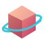
VoxelPlanet Docs · v1.0dev505 · for Unity and URP
Little worlds you can walk on, dig into and fly around.
A whole planet in your scene, about 7.5 km around and made of voxels, so every bit of it can be dug out or built up. This is the guide: from importing the package to building planets of your own.
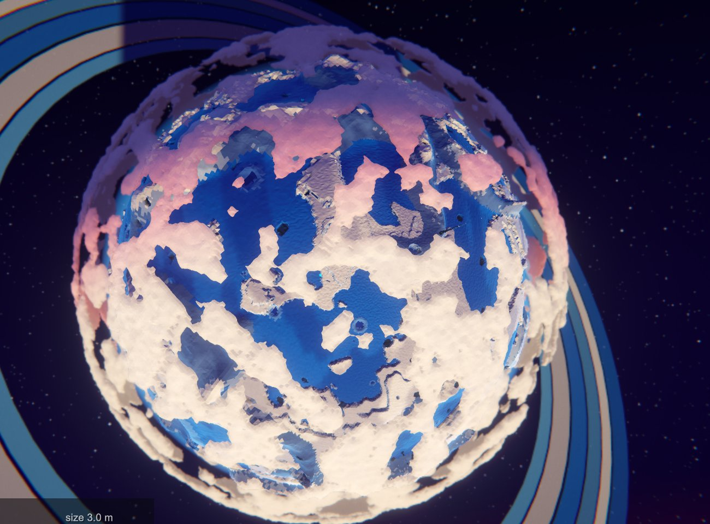
Drag to spin
Azure: blue seas of dust with white plates.
You walk on the planet in third person, fly with a jetpack, dig down through layers of caves towards a glowing core, and zoom out to orbit to watch the whole thing turn.
You don't sculpt planets by hand. Each planet is one asset holding its settings: hills, mountains, craters, caves, colours, plants, animals and sky. The Planet Editor shows you the result while you drag the sliders. Six finished planets come with the package, so you can start playing straight away and then take them apart to see how they work.
VoxelPlanet in action. The video plays from YouTube once you click it. Open it on YouTube
Change it anywhere. Level of detail holds up from your feet all the way out to orbit.
Four modes: excavate, add, flatten and level. Build towers, dig tunnels, make floors.
Each with its own colours, plants and faint light, and a molten core at the centre.
Plants on the surface and in the caves, and animals that roam the surface, placed by biome.
Day and night, rounded clouds that shade the ground, fog with light shafts, a ring and moons.
A window for designing planets with live previews, checks and numbers.
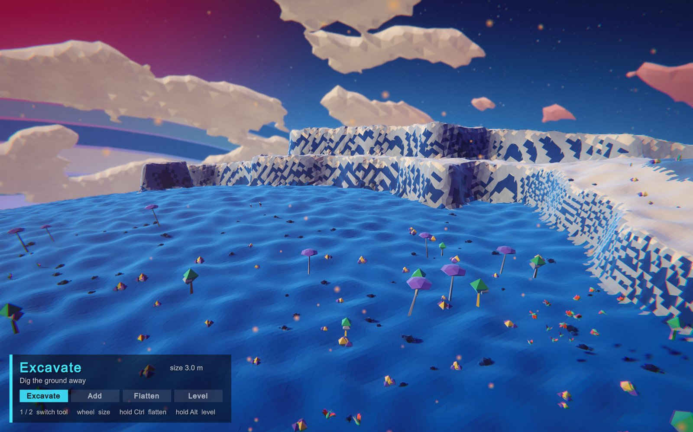
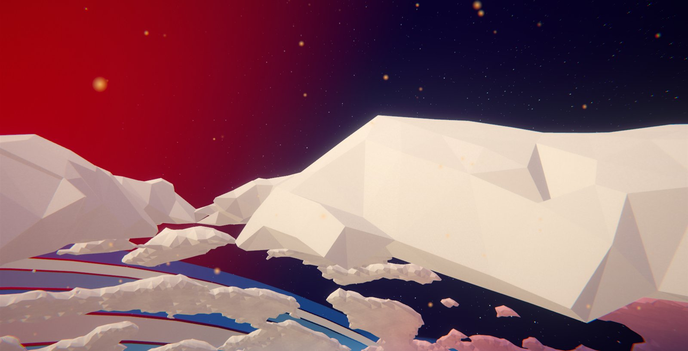
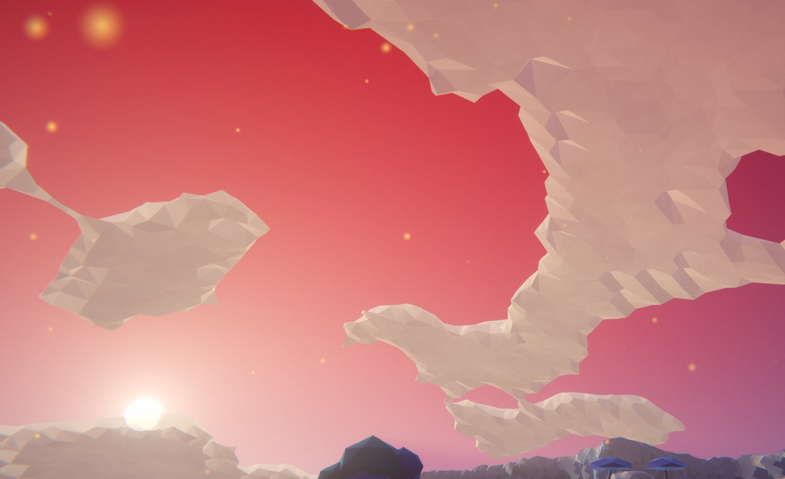
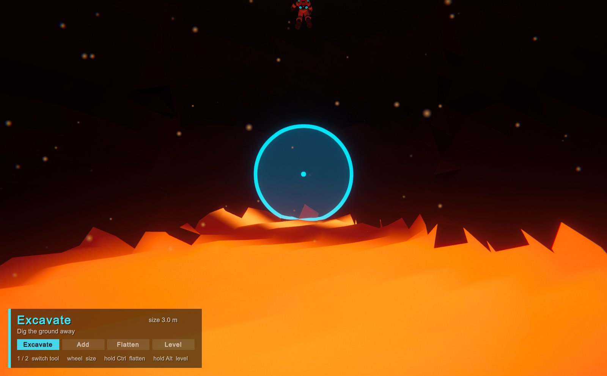
VoxelPlanet is written for the Universal Render Pipeline. The shaders won't work in the Built-in pipeline or in HDRP.
You don't have to check any of this by hand. The Welcome window does it for you as soon as you import the package, and fixes most of it with one click.
Create a new project from the Universal 3D template in Unity Hub. In Unity 6.6 it already includes URP and every package listed above.
A planet has a radius of 1,200 m. The first time a planet loads, VoxelPlanet bakes its surface into a cache file of about 25 MB. That takes around a second; after that the planet starts straight away.
This takes a few minutes. Tick the steps off as you go; this page remembers where you got to.
All done. Have fun on your planet!
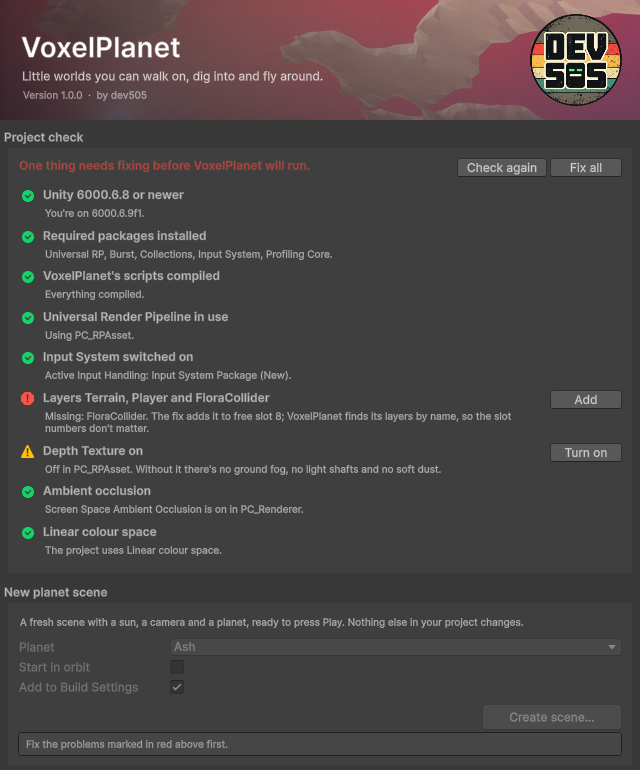
The Welcome window looks at everything VoxelPlanet needs from your project. Red lines stop VoxelPlanet from running; orange ones are suggestions. Click a check to see what its button does.
Installs whichever of Universal RP, Burst, Collections, Input System and Profiling Core are missing. Without them VoxelPlanet's scripts can't compile, so this one comes first. The window itself still works when they're missing.
Switches the project to the URP settings that come with VoxelPlanet.
Sets Active Input Handling to Both, so anything in your project that uses the old Input Manager keeps working, then restarts Unity after asking.
Adds them to free layer slots. VoxelPlanet finds its layers by name, so it doesn't matter which slots they get, even if your project already uses slots 6 to 8.
Turns it on in your URP asset. Without it there's no ground fog, no light shafts and no soft dust.
Offers to switch to VoxelPlanet's URP settings, which have it, and asks first. Or add Screen Space Ambient Occlusion to your own renderer.
Switches the project to Linear. Unity reimports your textures, which can take a while.
The window opens by itself the first time, after an update, and whenever Unity starts with something red. A tick box at the bottom turns that last one off.
Under New planet scene in the Welcome window, pick a planet, tick Start in orbit if you like, and click Create scene. Choose where to save it. You get a new scene with a sun, a camera and the planet, added to Build Settings, and nothing else in your project changes.
You play in third person, and the game captures the mouse. Press Esc to get the cursor back, for example to use the Inspector; click in the Game view to capture it again. That first click only grabs the mouse, it won't dig a hole.
Point at an action to see its keys, or at a key to see what it does.
Point at something.
Every binding lives in Input/InputSystem_Actions. Open it to change any of them.
The jetpack. Jump, then keep holding Space. After about a quarter of a second it kicks in and pushes you up at up to 20 m/s. It holds three seconds of fuel, which refills while you're on the ground.
Orbit view. Press Tab and the camera flies out to about 5.8 km in a couple of seconds. Your astronaut waits where you left them. Drag to turn around the planet and use the wheel (or the triggers) to zoom between 1.7 and 9 km. Tab again flies you back down.
Handy keys while testing. F1 free camera (Q/E down and up, hold the right mouse button to look), F3 on-screen display, F4 statistics, F5 save, F9 load.
The tool reaches about 16 m. Wherever you point it, a glowing ring on the ground shows the brush: that's the area you're about to change. The panel in the bottom-left corner shows the mode and the brush size.
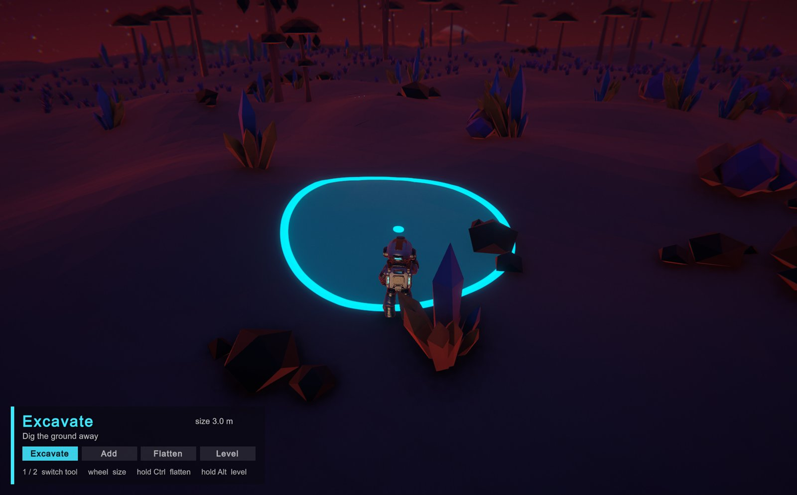
Mouse wheel, or [ and ], in half-metre steps from 1.5 m to 6 m. Next to the astronaut for scale.
There are two limits. You can't dig into the core, and you can't build above the planet's build ceiling, which is set per planet (by default 1,456 m from the centre, about 250 m above the surface). Everything you change goes into the saved game.
Most planets have caves under the surface, in up to five layers. Sinkholes and shafts open some of them to the sky, and you can always dig your own way down.
It's dark down there. Press L for the helmet lamp. Each cave layer also has a faint light of its own, brighter the deeper you go, and plants that glow.
Every change the player makes to the ground is saved, along with where the player is standing and the time of day. Animals aren't saved; they're placed again when the planet loads.
%USERPROFILE%\AppData\LocalLow\<Company>\<Product>\Saves\slot0~/Library/Application Support/<Company>/<Product>/Saves/slot0~/.config/unity3d/<Company>/<Product>/Saves/slot0Each slot holds a small planet.vps with the player's position and the time of day, plus one .vpr file for every 256 m block of the planet that has been changed. The quickest way there is the Show folder button in the Saved game section of the PlanetRuntime component.
If you change a planet's ground in the Planet Editor (its shape, caves or layers), old saves no longer fit it, and VoxelPlanet starts the planet fresh instead of loading them. Colours, plants, the sky and the clouds don't matter. The Planet Editor warns you before you save a change that would stop a save loading.
To start over, delete the slot0 folder, change Save Slot on PlanetRuntime, or untick Load On Start (fresh start, still saving) or Enable Persistence (no saving at all). After a terrain change, deleting the old slot folder is the tidy option.
This is where planets are made. Open it from Tools › DEV505 › VoxelPlanet › Planet Editor, by double-clicking a planet asset, or with the Edit planet button on PlanetRuntime.
Point at a number, or at a line in the list, to see what that part of the window does.
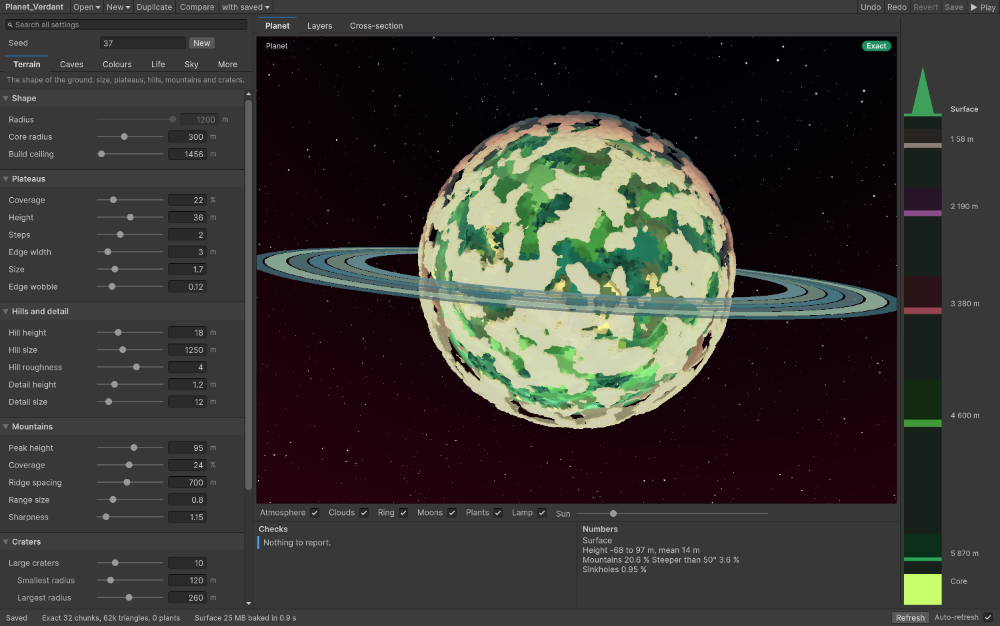
The whole world. Drag to turn it, scroll to zoom, double-click to see all of it again. Click the surface to pick a place: that's where you start when you press Play. Hold Alt and drag to move the sun.
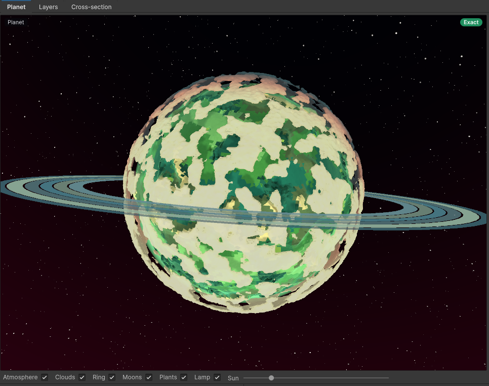
One cave layer at a time: a map on the left, a view from inside on the right. Pick the level with S and 1 to 5. In the inside view, drag to look and scroll, or use W/S, to walk.
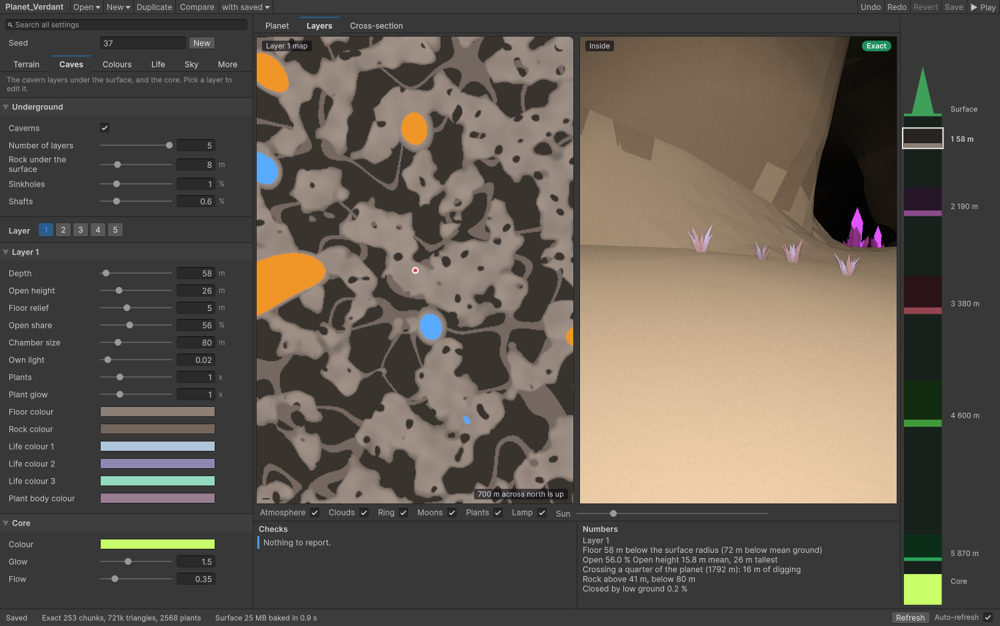
The planet cut in half, so you can see every layer down to the core at once. Click a layer to select it.
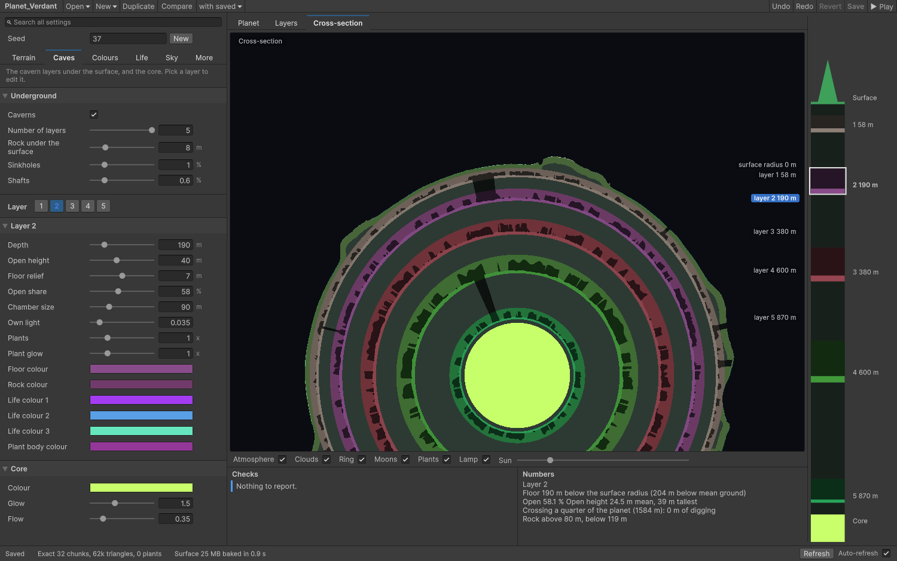
The settings are split over six tabs, and every one has a tooltip. Pick a tab:
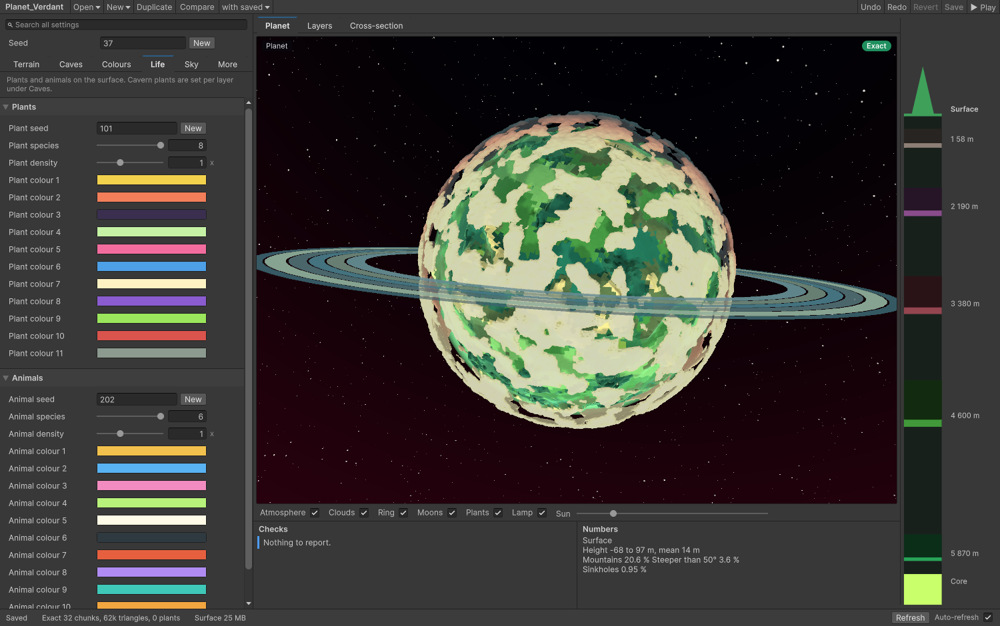
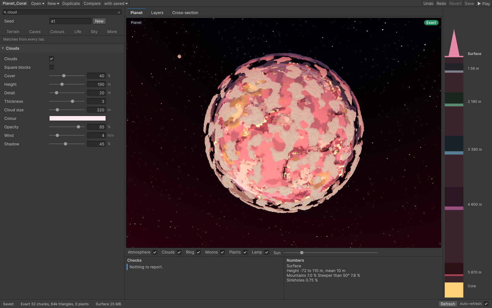
| Ctrl+S | Save | 1 2 3 | Planet, Layers, Cross-section |
| Ctrl+Shift+R | Revert | 4 | Compare on or off |
| Ctrl+F | Search settings | [ ] | Layer up or down |
| Ctrl+R | New seed | F | Frame the view |
| Ctrl+Shift+P | Play | L | Lamp in the inside view |
| F5 | Refresh the previews |
The easiest way is to start from a planet that's close to what you want and change it bit by bit, watching the preview as you go.
In the Planet Editor, click New › From preset and pick one of the six. Give it a name. It's saved as a new Planet_<name> asset, so the original stays as it was.
Click New next to the seed a few times until you like the layout of the land.
On the Terrain tab, plateaus give raised, stepped crust; hills and detail roughen it; mountains form long ranges; craters punch holes. Numbers tells you how high things go and how much is steeper than 50°, which is too steep to walk comfortably.
On the Caves tab, choose the number of layers, then set each one's depth, height and how open it is. Watch Crossing a quarter of the planet in Numbers: it's how much digging it takes to get across that layer.
Colours, then Life, then Sky. Clouds, the ring and the moons are all on the Sky tab.
Anything marked ✖ has to go before you can play. Things marked ! are advice; it's up to you.
Walk around, dig a bit, fly up and press Tab to see it from orbit. Go back, adjust, play again.
Make a scene for it in one click with the Welcome window's New planet scene, or drag the planet into the Definition field of PlanetRuntime in an existing scene.
A VoxelPlanet scene needs three things: a camera tagged MainCamera (VoxelPlanet makes one if it's missing), a Directional Light for the sun, and a GameObject with the PlanetRuntime component, which loads the planet and runs everything else. The Welcome window's New planet scene makes exactly these.
| Field | What it's for |
|---|---|
| Definition | The planet to load. Empty gives you Ember. |
| Resources | The Data/RenderResources asset: shaders and player models. Leave it set, or a build may leave out shaders it needs. |
| Input Actions | The Input/InputSystem_Actions asset with the player's controls. |
| Start In Orbit | Start in orbit view instead of on the ground. |
| Spawn Direction | Where on the planet the player first appears. |
| Enable Life | Plants and animals on or off. |
| Enable Persistence | Saved games on or off. |
| Save Slot | Which slot folder to use. |
| Load On Start | Load the slot's save when the game starts. |
| Autosave | Save the changes every two minutes. |
| Quality | Low, Medium or High (see Performance). |
| Movement Dust | Dust from footsteps, landings and the jetpack near the ground. |
| Camera Shake | A small shake while the jetpack fires and after a hard landing. |
| Capture Cursor | Hide and lock the mouse while playing; Esc frees it. |
| Show Hud | The on-screen display at start (F3). |
| Show Stats | Statistics at start (F4). |
| Debug Fly Camera | Start with the free camera (F1). |
| Light underground | How fast daylight fades below the surface, and how bright the caves' own light is. |
| Helmet lamp | Whether it starts on, plus colour, brightness, range and beam angle. |
Building the game needs nothing special: add your scene to Build Settings, keep Resources set, and build. Each planet bakes its surface cache the first time it runs on the player's machine, in about a second.
VoxelPlanet does its heavy lifting in Burst jobs spread over all your CPU cores. If you need more speed, these make a difference, roughly in order of impact:
| Setting | Where | Effect |
|---|---|---|
| Quality | PlanetRuntime | Low cuts terrain detail to 75 %, turns off MSAA and stops plants casting shadows; Medium cuts detail to 90 %. |
| Detail distance | Planet Editor, More | How far full terrain detail reaches (1 to 6, default 2). |
| Detail from orbit | Planet Editor, More | The same for orbit view (1 to 8, default 4). |
| Plant and animal density | Planet Editor, Life | Fewer things to draw. Cave layers have their own plant setting. |
| Cloud detail | Planet Editor, Sky | Bigger detail, fewer cloud triangles. |
| Volumetric fog | Data/PostProcessing | Fewer Steps or more Downsample is faster. |
Press F4 while playing to watch frame times as you change one thing at a time. Five benchmarks play the demo scene by themselves and report how fast it ran: SurfaceRun, OrbitDescent, EditStorm, Life and the ten-minute Soak. Run them from Window › General › Test Runner, PlayMode tab, BenchmarkTests; they only show up when the Performance Testing package (com.unity.test-framework.performance) is installed. They always play the first built-in planet and use their own save slot.
The project isn't using URP. Open Tools › DEV505 › VoxelPlanet › Welcome and click the button next to Universal Render Pipeline in use.
Unity is compiling shaders in the background. Give it a moment; it only happens after shaders change.
The Input System isn't switched on. The Welcome window fixes it with one click.
The game has the mouse. Press Esc.
That's on purpose: the first click only captures the mouse again.
Depth Texture is off in your URP asset. The Welcome window turns it on.
The planet's terrain changed since the save was made, so VoxelPlanet started it fresh. See Saved games.
Look at Checks. Something is marked ✖ and needs fixing first.
The planet is being baked; the first time takes a second or two. Press F5 in the window or click Refresh.
Auto-refresh is off. Turn it on, or press Refresh.
Open the Welcome window and click Add next to Layers.
Nothing matches. Ask on Discord and we'll add it here.
Everything lives in one folder, so it's easy to find, move or remove. You can move the whole folder elsewhere in your project; the tools find it wherever it is.
Tell me your Unity version, what you did just before the problem, and what the Console says.
Questions, ideas, planets you've made. Come and say hi.
Everything on this page, to keep offline or print.
The Transvoxel lookup tables used for meshing are copyright 2009 Eric Lengyel and distributed under the MIT License.
Thanks for picking up VoxelPlanet. Have fun with your planets.